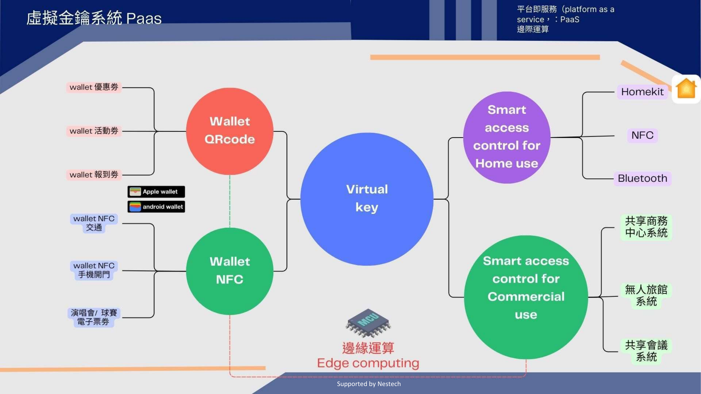

很多人聽到「數位票券」，第一個想到的是 QR Code 門票，或是手機裡的一張優惠券。但如果只把它理解成「紙本票券的電子版」，就會錯過它真正有價值的地方。
數位票券的重點不是畫面，而是權限。誰可以使用？什麼時間可以使用？在哪個入口可以使用？使用後是否失效？能不能更新內容？能不能和會員、報到、門禁或後台紀錄接在一起？
從神御科技 VG Scutum 的官網來看，它們談的不是單一票券工具，而是一套以 Wallet 電子票券、虛擬金鑰、API 串接與硬體設備為核心的通行權限系統。這個方向很值得放進旅宿科技與智慧空間的討論裡，因為未來很多入住、活動、會員與門禁流程，都會從「發一張卡」變成「發一個可管理的數位憑證」。
Wallet 電子票券，是手機裡的輕量憑證

Apple Wallet 官方把 Wallet pass 用在會員卡、登機證、票券、禮品卡、優惠券等情境；Google Wallet 也把票券、交通、零售、通行、健康與一般憑證分成不同應用類型。也就是說，Wallet 不只是支付工具，它也是一個很適合承載「日常通行憑證」的入口。
對使用者來說，最大好處是不用另外下載一個陌生 App。票券可以存在手機原生 Wallet 裡，入場、報到、領優惠或出示會員資格時，旅客只需要打開手機裡已經熟悉的位置。使用者提供的大型賽事資料也把這件事整理成很直覺的流程：購票後 Scan & Save，把門票存進 Apple Wallet 或 Android Wallet，抵達場館時直接準備通行。
對業者來說，關鍵則是後台能力。票券可以被產生、發送、更新，也能搭配 QR Code、NFC、藍牙或門禁設備驗證。這讓票券從一次性的圖檔，變成可以被管理的狀態。
VG Scutum 的切入點：票券生成、API 與硬體搭配
VG Scutum 官網把方案分成幾個層次：Wallet 電子票券生成系統、標準化 API，以及依照場域搭配的硬體設備。這個拆法很實際，因為數位票券導入時，最常卡住的不是「能不能做出一張票」，而是能不能接上既有系統與現場設備。
如果業者原本就有訂票系統、會員系統、PMS、活動報名系統或門禁後台，票券平台就不能只是另一個孤立後台。它需要 API，讓既有系統可以把姓名、票種、有效時間、訂單狀態、會員身份或房號權限轉成 Wallet 票券。
如果票券要用在進出管制、活動報到、共享空間或旅館入住，還需要硬體端配合。官網也明確提到，Wallet 電子票券可以搭配對應硬體，用在進出管制或活動報到。這才是數位票券和一般行銷優惠券最大的差別：它會進入現場營運流程。
從優惠券到門禁卡：同一張 Wallet 可以承載不同任務

VG Scutum 官網列出的 Wallet 類型包含電子優惠券、門禁卡、會員卡與電子門票。這幾個類型看似分散，其實背後是同一件事：把一個人的資格，包成手機可以保存、現場可以驗證的憑證。
優惠券代表「這個人可以享有某個活動或折扣」；會員卡代表「這個人屬於某個會員等級」；電子門票代表「這個人可以在某個時間進入某個活動」；門禁卡則代表「這個人可以進入某個空間」。
當這些憑證都進入 Wallet，業者就可以把行銷、身份、活動與通行整合起來。例如活動主辦方可以先發送電子門票，現場用 QR Code 或硬體設備完成報到，活動結束後再把參與者轉成會員分群。旅宿業者也可以把預辦入住後的手機憑證，接到房門、電梯或公設權限。
會員錢包：讓票券變成可追蹤的營運入口
Cell Nexus 的 Member Wallet 頁面，則把數位票券往會員營運再推進一步。它不是只展示一張優惠券，而是把系統分成「廠商管理活動後台」與「消費者會員錢包」兩端：一邊讓商家發券、追蹤領取與使用轉換率，另一邊讓消費者用手機查看會員卡、點數、餘額、領券與核銷狀態。
這個切法很接近真實營運。對商家來說，優惠券不是發出去就結束，而是要知道誰領了、誰用了、庫存如何扣減、活動是否帶來轉換；會員點數與儲值餘額也不是靜態資料，而是會跟每一次消費、抵扣和活動互動連在一起。
對消費者來說，會員錢包則把「會員卡、點數、餘額、優惠券、核銷 QR Code」收進同一個入口。這讓票券從一次性的入場憑證，延伸成可持續經營的會員關係。也因此，數位票券不只服務現場驗證，也服務後續的會員分群、回訪、優惠推送與活動成效分析。
活動報到會是很自然的第一個場景
活動報到很適合數位票券，因為它同時需要發券、驗票、入場、紀錄與例外處理。
傳統做法常見幾種斷點：報名系統在雲端，現場名單在 Excel；票券在 Email，入場靠人工查找；報到完成後，資料又沒有回到後台。人少時還能靠工作人員處理，人一多就容易排隊、漏登、重複入場或查不到資料。
Wallet 電子票券可以把這些流程變得更直覺。報名完成後發送票券，票券存在手機；抵達現場時掃描 QR Code 或感應設備；後台記錄誰已報到、誰尚未到場、哪張票已使用、哪張票需要人工處理。
這對展會、講座、球賽、園遊會、品牌活動都適用。更重要的是，活動結束後資料不會只停在「有沒有入場」，而是可以延伸成會員分群、回訪優惠、下一場活動邀請或現場人流分析。
球場與大型賽事：數位票券的高壓測試場

球場和大型賽事是數位票券很好的壓力測試場，因為它們同時面對高人流、短時間入場、分區權限、臨時工作人員與網路壅塞。傳統大型賽事常見的問題，是驗票速度慢、需要大量現場人力、紙票與塑膠證件造成浪費，而且閘口系統如果高度依賴 Host PC 或即時網路，現場一壅塞就會放大風險。
使用者提供的 Godspeed 場館資料把流程拆成三步：Step 1 是取得憑證，也就是購票後 Scan & Save，把專屬虛擬金鑰存進手機原生錢包；Step 2 是抵達場館，手機不需要解鎖或開啟特定 App 就能準備感應；Step 3 是 Quick Pass，透過 NFC、BLE 或 Wallet QR Code 搭配閘口設備完成快速通關。
這裡的重點不只是入場變快，而是場館權限可以分層。一般觀眾走球迷通道，VIP 可以進入包廂或專區，工作人員與商務營運人員則有不同的內部權限。當虛擬金鑰平台可以把同一個身份轉成不同場域的通行規則，票券就不只是「進不進得去」，而是「可以去哪裡、可以使用多久、使用後留下什麼紀錄」。
大型場館也讓邊緣運算的重要性變得更明顯。高人流現場不能每一次驗證都等雲端回應，否則網路塞車就會變成入口塞車。透過邊緣驗證模組，閘口可以在現場完成必要判斷，雲端再負責同步、統計與後台管理。這也是數位票券和智慧門禁真正接起來的地方。
旅宿場景：票券其實可以是入住憑證
在旅宿裡，數位票券可以不叫「票」，而叫入住憑證、房客通行證、早餐券、停車憑證、公設使用券或臨時訪客證。
這些東西原本可能散在紙本房卡套、早餐券、停車券、櫃台登記表與門禁卡裡。當它們變成 Wallet 票券後，旅客手機就可以承載更多抵達後會用到的權限。
例如旅客完成線上預辦入住後，系統可以發送一張有效期間限定的入住憑證。抵達時，這張憑證可以用來觸發報到、領卡或啟用手機通行；早餐時可以驗證用餐資格；退房後，相關權限自動失效。對旅客來說是少拿幾張紙，對旅宿來說則是每一個權限都有紀錄、有時間範圍，也比較容易回收。
這和行動鑰匙、PMS 串接、自助 Kiosk 是同一條路線。差別只在於入口可能不是一張房卡，而是一張存在手機 Wallet 裡的憑證。
真正要導入時，請先想清楚 6 件事
數位票券看起來輕，但一旦進入營運，就要當成權限系統規劃。
- 票券來源：票券由訂房系統、報名系統、會員系統，還是人工後台產生。
- 身份綁定：票券是不記名、記名，還是需要和手機、會員或訂單綁定。
- 驗證方式：現場用 Wallet QR Code、NFC、BLE、門禁讀頭、邊緣運算模組，還是人工掃碼。
- 有效規則：票券是否有開始時間、結束時間、使用次數與失效條件。
- 例外處理：手機沒電、票券轉傳、重複入場、高人流網路壅塞、資料錯誤時，誰可以處理，是否支援離線驗證。
- 後台紀錄：使用紀錄、發送紀錄、硬體紀錄、會員點數/餘額、領券、核銷與轉換率是否能查詢或輸出。
如果這六件事沒有先定義，數位票券很容易變成另一個漂亮但孤立的工具。定義清楚後，它才會變成能被營運使用的憑證基礎建設。
下一步：數位票券會和智慧門禁長在一起
VG Scutum 官網反覆提到「虛擬金鑰」這個概念，也提到可以依照不同場域把虛擬金鑰轉成 NFC 卡片、藍牙、QR Code 或 Wallet 等形式。這個觀點很重要：未來不是所有場景都只剩一種開門方式，而是同一個權限，可以被轉成不同載體。
大型飯店可能偏向房卡與手機鑰匙並行；中小旅宿可能先從 QR Code、Wallet 憑證與自助發卡開始；活動場域可能從電子門票與報到硬體切入；球場和大型展演場館會需要球迷通道、VIP 專區與內部營運權限；零售與餐飲品牌則可能先從會員錢包、點數、優惠券和核銷開始。
所以數位票券不是優惠券的小功能，而是智慧空間的入口之一。它同時連接會員營運、活動與場館通行、旅宿與智慧空間門禁，把「身份、權限、場域與紀錄」包進使用者手機，也接回業者後台。未來真正重要的不是票券電子化，而是同一個 Wallet 憑證能不能被驗證、被更新、被回收，並在每一次使用後留下可管理的營運資料。